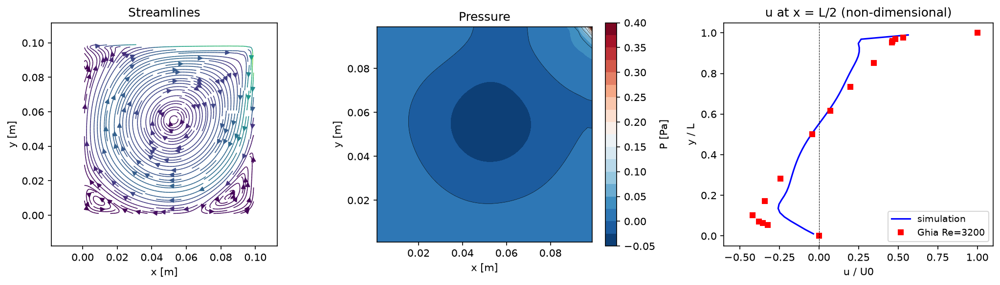

6. 移流項の改良
ここまでで作った素朴な中心差分のコードが、どこまで通用してどこで破綻するかを実際に確認する。
支配方程式
このステップで見直すのは移流項（下線部）——空間の離散化（中心差分）と時間の進め方の両方:
セルPeclet数
中心差分による移流項は、
セルPeclet数
Pe_cell = U・dx/νがおよそ2を超えると、解に物理的でない振動（wiggle）や基準解からのずれが
現れやすい。5. 圧力Poissonの cavity Re=1000（U0=0.01、48×48格子）は
Pe_cell ≈ 21で、それでもGhia基準解とよく一致した。ここから格子を固定したままReを上げると
Pe_cellがさらに上がり、中心差分では解像しきれなくなる。
実行して確認: cavity Re=3200
同じ48×48格子のまま Re だけを上げて、中心差分の限界を見る。cavity なら流入・流出や 助走区間 の交絡がないので、Ghia基準解とのずれを純粋に数値スキームの限界として見られる。
- コードは5. 圧力Poissonを終えた cavity の完成形のまま（
wrk/main.f90もすべて有効のまま）。 wrk/config.csvを次のようにする（他はデフォルトのまま）:key 値 理由 casecavityGhia基準解（Re=3200の表もある）を重ねる U00.032Re=3200,Pe_cell≈67に上げるdt0.001陽解法は流れが速いほど小さい時間刻みが要る nstep100000定常に近づくまで回す nout10000途中経過も書き出す - ビルドして実行し、絵にする（10万ステップは数分かかる）:
cd wrk make ./cfd.exe cd .. python post/plot.py wrk/config.csv
実行結果を見る

Re=3200, 48×48格子。固定した粗い格子ではPe_cell≈67まで上がり、薄い境界層や
下の二次渦を中心差分では解像しきれず、中心線のu分布（右パネル）がGhia基準解（赤四角）から
ずれる。さらにReを上げると中心差分は不安定になり計算が破綻する。
もっとも素直な改良はdxを小さくしてPe_cell自体を下げることだが、計算コストが上がるので現実には難しい。
そこで格子は固定したまま、離散化のしかたを空間・時間の両面から改良する方向を考える。
空間精度と安定性の改良
移流項の空間離散化（中心差分）を、高Peでも振動しにくいものに変える。時間の進め方は変えない。
1次風上差分
中心差分の代わりに、風上差分——微分を流れの来る側の片側差分で作る——にすると振動を抑えられる。
移流速度aの符号で使う側を変える:
これは中心差分に数値粘性
（大きさ 程度）を足したことに等しい。振動は消えるが精度は1次に落ち、流れがぼやける。
実装はadvection.f90の中心差分を風上差分に変えるだけで、diffusion.f90・poisson.f90には触らない。
高次の風上系
1次風上は安定だが拡散的すぎる。精度と安定性を両立させるため、風上側を優先しつつ高次で内挿する方法がある。
- 2次精度風上差分: 風上側の2点を使う（
a>0なら ）。1次風上より数値粘性が小さい。 - QUICK[2]: 風上2点＋風下1点の放物線内挿で面の値を作り、面で3次精度になる。
- TVDスキーム[6]: 高次スキームに流束制限関数をかけ、振動を出さずに高精度を保つ。実務のCFDでよく使われる。
時間精度の改良
時間の進め方は今前進Euler法（1次精度）。移流項の寄与を（移流項のページのadv）と書くと、1ステップ前の値だけで進めている:
Adams-Bashforth法
Adams-Bashforth法（AB2）[5]は過去2ステップのadvを使って2次精度にする:
時間精度が上がるうえ、AB2の安定領域は虚軸の近くを少し含むので、 前進Eulerでは本来不安定な中心差分の移流を、ある程度安定に進められる。実装は1ステップ前のを配列に保存しておくだけ。 粘性項の寄与も同じ形で扱え、非圧縮流れでは移流項をAB2・粘性項をCrank-Nicolson法にする組み合わせが定番。